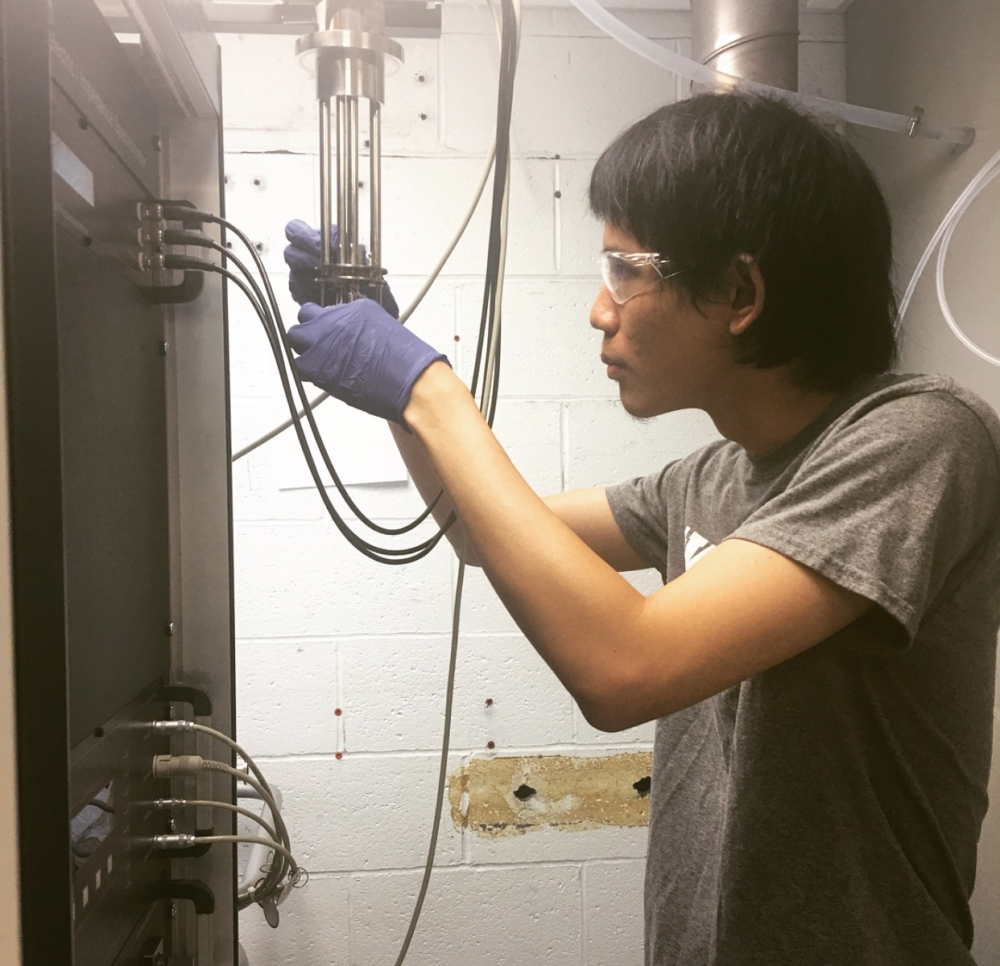
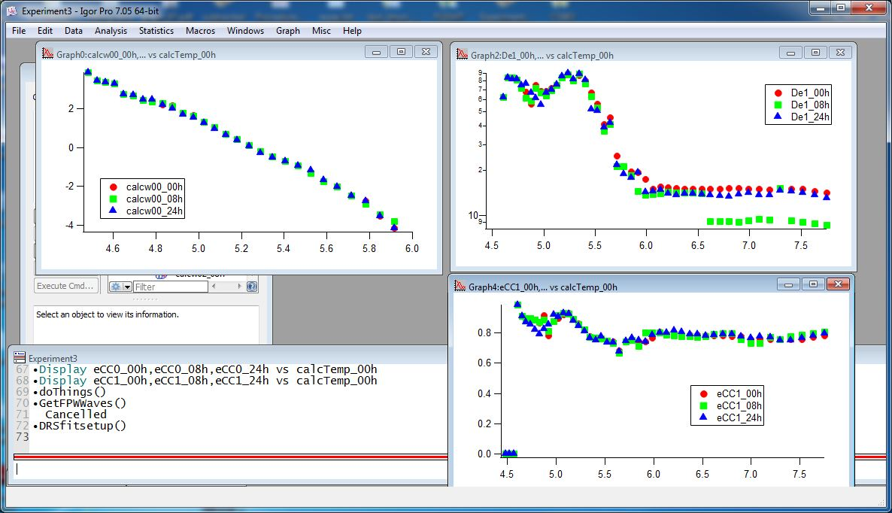
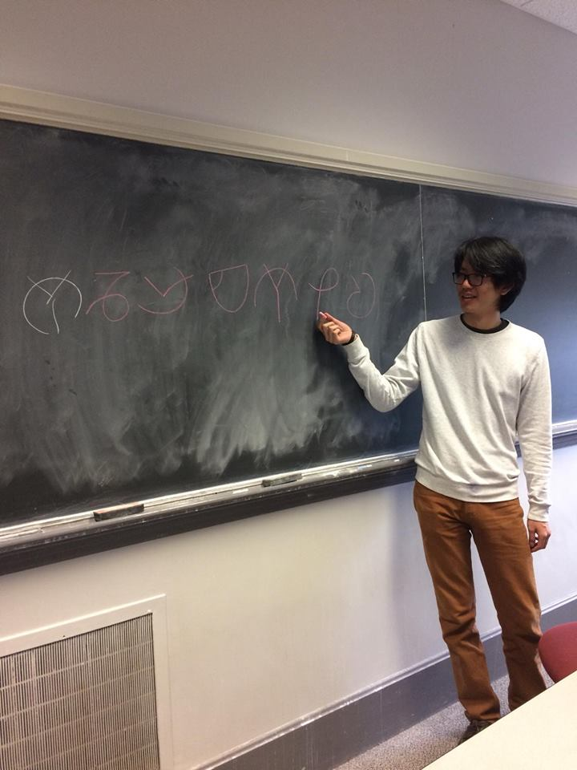

I spent my childhood in front of the XBox 360 for hours on end. Now as a college student, I lament the
thousands of hours wasted on shooting Brutes in Halo 3 and sometimes wonder where I would be in life
if I used those hours to learn a useful skill.
But perhaps it wasn't all to waste. What never ceases to amaze me is my concentration with video games.
Though most people couldn't stay focused on writing that 1000-word english essay for more than 15 minutes
at a time, my video gaming sessions usually go on for 5-6 hours. Mind you, this is considered 'casual' by
Gamers' Standards.
How is this possible? Well, video games are fun, and homework is boring. That's why after our team had been
procrastinating on work by clicking cookies
for about an hour, we came to realize the potential of video games. If we could design an addictive piece of software
that teaches people about music, we would be helping out aspiring musicians worldwide (and making it rain $$$)!
Dubbed as 'Name of Game' because we never agreed on a name, our team tried to develop a game with similar incremental
mechanics like the cookie clicking game. A musical note will be played, and the user has to press the corresponding note
on the piano interface. Doing so successfully will increment the user's points, which they can proceed to unlock more notes
and extra features.
It is currently a work in progress, so stay tuned for further updates!
Research in Amyloidogenic Protein using the Dielectric Relaxation Spectroscopy Method
When I tell my peers that my research was in bio-physics, they give me a bewildered look and ask me "aren't you a computer
science major?". At first glance it does not make much sense to be doing research in a field unrelated to my major. However, by
doing research in a different field, I could offer a valuable technique that may be unknown to the research of a given field.
My expertise in script-coding and data-mining was put to good use in analyzing the heaps of data that Professor Izabela Stroe
collected with the Dielectric Relaxation Spectroscopy Method.

For a more technical detail of the analysis that our lab has been doing, we use the Dielectric Relaxation Spectroscopy Method
to analyze amyloidogenic protein. This is achieved by putting the protein sample in the capacitor to alter its permittivity. Then,
alternating current of varying frequencies is sent through the capacitor, which is measured by the NOVOCONTROL Spectrometer.
I have also had the opportunity to work with Professor David Turton of the University of Glassgow to modify an igor procedure
file that he has developed in order to analyze the relaxations peak.

As of the time of writing, we have analyzed Amyloid-Beta 1-42 Protein, believed to be responsible for Alzhiemers Disease, in
Bovine Serum Albumin. We are moving on to measure Amyloid-Beta Scrambled 1-42 in the same conditions, and then to compare results.
The Teaching Life
Teaching mathematics and science is my gig. There was always the sense of accomplishment when I could make my peers to achieve
the 'Aha!' moment. I also found that by explaining verbally, I would be able to understand the concept more deeply.
That's why after graduating from high-school I started a part-time job teaching at a school's dormitory and a son
of a helicopter mom.
In the school's dormitory, I continue to spark the 'Aha!' moments with my students. However, with the helicopter mom's son,
I will call him John, things were a little different. His life was one huge schedule, forced to work like a robot. He acted out
when he could, a futile attempt at rebelling against the world around him.
That was when my role as a teacher changed. It was more than just explaining concepts. I wanted John to know the joy of just
having fun and screwing around. I tried to make the lessons we had more than just me explaining, but a chance for him to hang out with
a friend. We would go on 'discovery journeys' on the internet, and I tried my best to inspire him to come to love and enjoy math and
science.

As of now, I work in Worcester Polytechnic Institute's Math Department as a Peer Learning Assistant and the Computer Science
Department as a Senior Assistant. I have taught Calculus I, Calculus III, Differential Equations, Probability, and Machine Organization
and Assembly in my 2 years.
Robots
RBE 1001
It's the last semester of college freshmen year. You're completely new to this whole robotics competition thing, and you are facing
against FIRST Robotics veterans, so you have to make up for it by doubling the effort.
We got second place with SkRap (Robot in video above), so that was pretty nice
RBE 2001
It's the Ghost from Pacman!
RBE 2002
Then along comes the third season . Other classes have been pounding on you like crazy. You've got 4 days to complete the
firefighting robot challenge so you do what you gotta do: Pull three all nighters in a row.
We did get it to work, however the battery went haywire during the actual challenege, so we cried for days.
check out the Other Stuff Tab
And make sure you have https:// in front of the website.